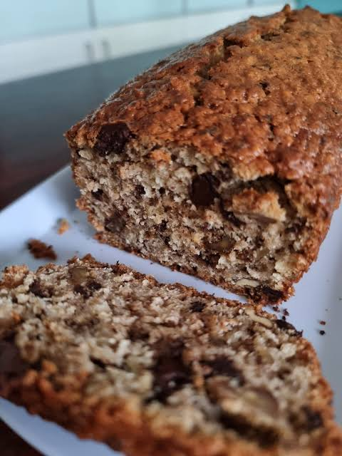

Budín de banana vegano

Ingredientes
- 3 bananas maduras
- 1 taza de harina leudante
- 1 taza de avena
- 1/2 taza de aceite
- 1/2 taza de azúcar
- 1/2 cucharadita de sal
- 1/4 de taza de agua
- 100 g de chocolate o chips de chocolate
- Procesá o pisá bien las bananas en un bol hasta formar un puré.
- Agregá el aceite, el azúcar, la sal, el agua, la harina leudante y la avena. Batí hasta integrar bien todos los ingredientes.
- Cortá el chocolate en trozos pequeños o usá chips. Pasalos un poco por harina para evitar que se vayan al fondo del budín durante la cocción. Incorporalos a la mezcla.
- Pasá la preparación a una budinera previamente aceitada o enharinada.
- Cociná en el horno precalentado a 180 grados durante unos 40 a 50 minutos. El tiempo exacto depende de cada horno. Pinchá con un palillo para verificar que salga seco.